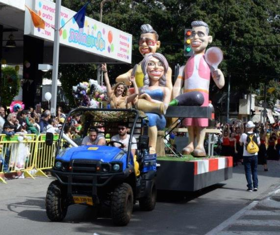

תהלוכת פורים הגדולה במדינה מתקיימת מידי שנה בעיר חולון והיא מהווה שיאה של פעילות קהילתית וארגונית המתרחשת במהלך השנה ומתעצמת לקראת החג. בתהלוכה, אשר מתמקדת בכל פעם בנושא מרכזי שונה, נוטלים חלק אלפי צועדים, ביניהם: תלמידי בתי הספר בחולון, משתתפי החוגים במרכזים הקהילתיים ובמרכזי התרבות והספורט, להקות של מתעמלים, פעלולנים ואקרובטים, קבוצות מנגנים ורקדנים, קבוצות תיאטרון רחוב, וכמובן מיצגי ענק ססגוניים, המהווים את החלק המרגש והמרשים במיוחד. לצד הצועדים מחולון משתתפים בעדלאידע צועדים אורחים מרחבי הארץ ולעיתים אף מהעולם. העדלאידע צועדת לאורך רחובותיה המרכזיים של חולון לעיני מאות אלפי צופים מכל הגילאים. לרוב מסתיימת הצעדה במופע ובמסיבת רחוב צבעונית ועליזה במיוחד ברחבה שמול העירייה. מתום העדלאידע ועד לסיום חג הפורים מוצבים ברחבת המדיטק המיצגים שהשתתפו בתהלוכה להנאת העוברים והשבים.
כחלק מההכנות לעדלאידע מתנהל בכל שנה תהליך חשיבה בהשתתפות כלל הגורמים בעיריית חולון ובחברות הבת העוסקות באירועים, תרבות, פנאי וספורט. בסופו של התהליך נבחר הנושא המרכזי המתאים לאותה שנה. הקבוצות השונות הנערכות לעדלאידע נרתמות לעבודה יצירתית, לחזרות ולאימונים סביב אותו נושא מרכזי. במרכז לתיאטרון בובות חולון נלמדת אמנות הקרנבל במסגרת לימודי תעודהנפתח בחלון חדש. התוצרים מהווים חלק מרכזי בתהלוכת העדלאידע. לסרטון על אמנות הקרנבל בקהילה ובעדלאידע - לחצו כאןנפתח בחלון חדש. בין נושאי העדלאידע במהלך השנים היו: ילדי העולם עושים שלום, דמויות אהובות מספרי הילדים וגני הסיפור, דמויות מסיפורי התנ"ך, לוקחים את הסביבה בסבבה בסימן הגנת הסביבה ושמירת משאבי הטבע, עדלאידע זה אופרה אחרת במלאת 60 לאופרה הישראלית ובסימן 70 שנה לאיחוד שכונות חולון למועצה אחת, עשור למוזיאון הילדים בסימן סובלנות, כבוד לזולת וקבלת האחר ועוד.